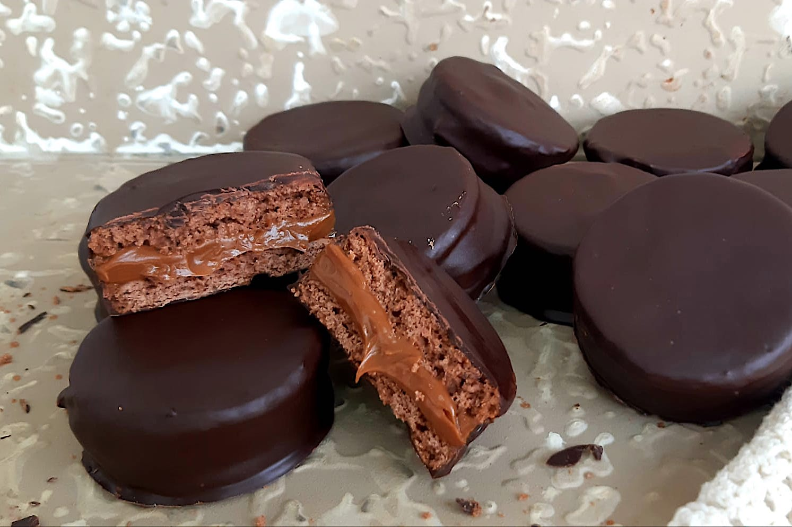

Fantoche no es solo un alfajor: es una declaración de principios. Dos tapas de cacao intenso abrazan un corazón de dulce de leche cremoso, envuelto en una capa de chocolate con leche que brilla como escenario bajo reflectores. Con una personalidad inconfundible, este ícono urbano es el favorito de quienes viven la vida sin pedir permiso. Disponible en versiones clásicas, triples y con rellenos innovadores, Fantoche es el compañero perfecto para romper la rutina con un toque de dulzura.
